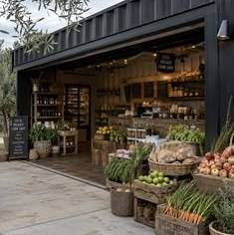
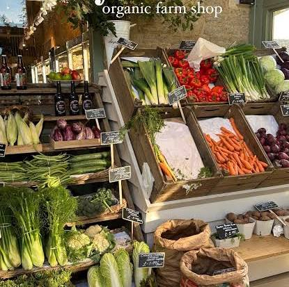
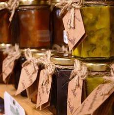

Shop
Don't even think about going home empty-handed! Our beautifully restored barn market is packed to the brim with unique Scottish crafts, quirky souvenirs, and delicious farmhouse goodies that you won't find on standard supermarket shelves.
We work closely with local artists, farmers, and bakers to bring you the very best the region has to offer. Whether you are hunting for a special birthday gift, a cozy wool woolen keepsake, or a secret stash of artisan snacks for the drive back to Edinburgh or Carlisle, you will find plenty of hidden gems waiting for you here.


